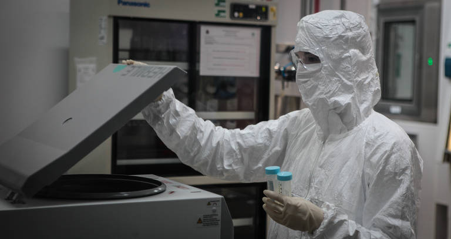
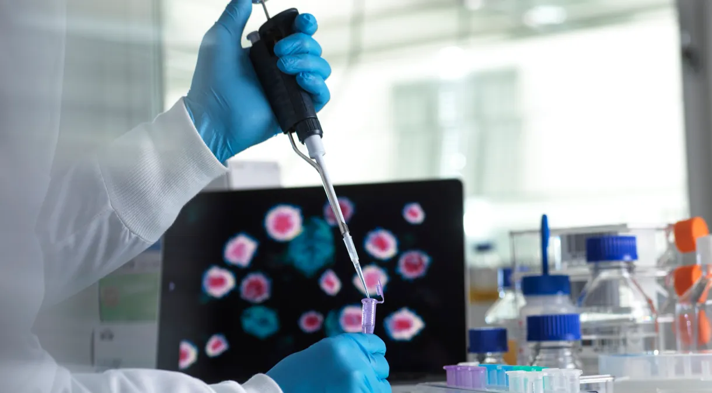
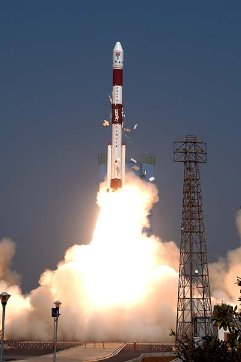
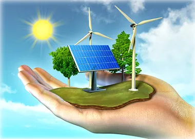

Descobertas Revolucionárias na Luta contra o Câncer
Em um avanço científico emocionante, pesquisadores anunciaram descobertas revolucionárias no campo da oncologia. Novos tratamentos e terapias estão sendo desenvolvidos para combater o câncer de maneira mais eficaz, oferecendo esperança renovada para milhões de pacientes em todo o mundo.
Descoberto Novo Tratamento Promissor para Doenças Neurodegenerativas
Pesquisadores anunciaram uma descoberta revolucionária no campo da medicina: um novo tratamento que mostra promessas significativas na reversão de doenças neurodegenerativas. Esta descoberta traz esperança para milhões de pessoas em todo o mundo afetadas por condições como Alzheimer e Parkinson
Lançamento Bem-Sucedido do Satélite de Observação Ambiental
A mais recente missão espacial viu o lançamento bem-sucedido de um satélite de observação ambiental. Equipado com tecnologia de ponta, o satélite ajudará a monitorar as mudanças climáticas, a qualidade do ar e outros indicadores ambientais, proporcionando dados valiosos para cientistas e formuladores de políticas.
Inovações Tecnológicas na Indústria de Energia Renovável
Empresas líderes no setor de energia renovável revelaram novas inovações tecnológicas destinadas a impulsionar ainda mais a adoção de fontes de energia limpa. Essas tecnologias prometem aumentar a eficiência e reduzir os custos, representando um passo importante rumo a um futuro mais sustentável.
